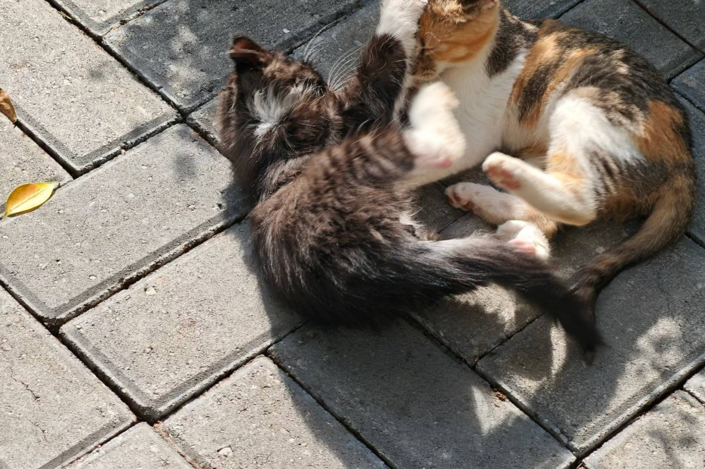

01
关于
踩坑记录员，半个前端。白天上课，晚上写代码，偶尔把失败的尝试也发出来。
这个站从第一天起就是纯静态的：没有构建流程，没有后端服务，一行 HTML 加一段 CSS，改完直接推。它更像一本摊开的笔记本，而不是一份简历。
站里的东西大多是自己用得上才做的——工具箱、考研大纲、打字测速、还有一只会踩单车的鹈鹕。
保持好奇 · 持续学习 · 快速行动
一些数字2026
写作12 篇
小工具14 个
游戏5 款
可考大纲27 科
设计版本v2
